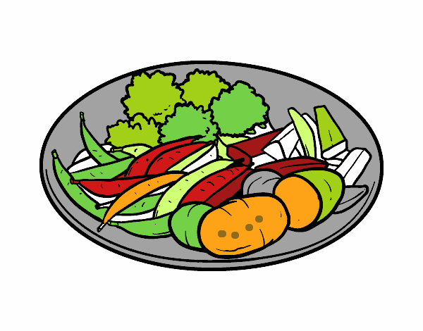

Recetas
Cibus te permite buscar posibles rectas mediante una lista de ingradientes que le proporciones, el uso que le hayas dado a la receta podrás indicarlo para que tu administarción con el inventario sea aún más facil. 
Usuario
Ten tu propio usuario y sube recetas para que las demás personas las usen además ten acceso a un invenatrio

Inventario
Con una cuenta de usuario serás capaz de acceder aun inventario de tus aliemtnos, lo que hara la busqueda de posibles recetas mucho más facil.
Solo entra a pagina y revisa que puedes preparar